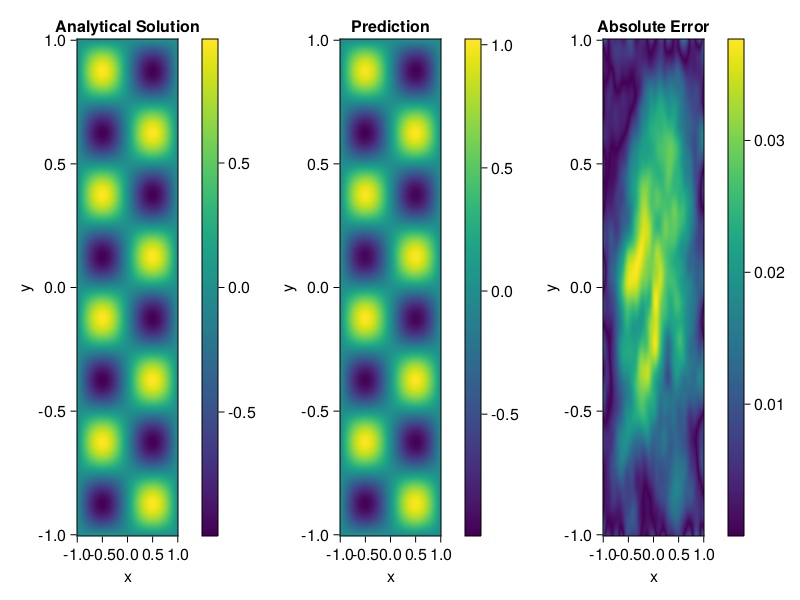

Helmholtz equation
Let us consider the Helmholtz equation in two space dimensions
\[\begin{aligned} &\Delta u(x, y)+k^{2} u(x, y)=q(x, y), \quad(x, y) \in \Omega:=(-1,1) \\ &u(x, y)=h(x, y), \quad(x, y) \in \partial \Omega \end{aligned}\]
where
\[q(x, y)=-\left(a_{1} \pi\right)^{2} \sin \left(a_{1} \pi x\right) \sin \left(a_{2} \pi y\right)-\left(a_{2} \pi\right)^{2} \sin \left(a_{1} \pi x\right) \sin \left(a_{2} \pi y\right)+k^{2} \sin \left(a_{1} \pi x\right) \sin \left(a_{2} \pi y\right).\]
The excat solution is $u(x,y)=\sin{a_1\pi x}\sin{a_2\pi y}$. We chose $k=1, a_1 = 1$ and $a_2 = 4$.
using NeuralPDE, IntervalSets, Sophon, Lux, Random
using Optimization, OptimizationOptimisers
@parameters x,y
@variables u(..)
Dxx = Differential(x)^2
Dyy = Differential(y)^2
a1 = 1
a2 = 4
k = 1
q(x,y) = -(a1*π)^2 * sin(a1*π*x) * sin(a2*π*y) - (a2*π)^2 * sin(a1*π*x) * sin(a2*π*y) + k^2 * sin(a1*π*x) * sin(a2*π*y)
eq = Dxx(u(x,y)) + Dyy(u(x,y)) + k^2 * u(x,y) ~ q(x,y)
domains = [x ∈ Interval(-1,1), y ∈ Interval(-1,1)]
bcs = [u(-1,y) ~ 0, u(1,y) ~ 0, u(x, -1) ~ 0, u(x, 1) ~ 0]
@named helmholtz = PDESystem(eq, bcs, domains, [x,y], [u(x,y)])
chain = Siren(2, 1; num_layers = 4, hidden_dims = 50, omega = 10f0)
ps= Lux.initialparameters(Random.default_rng(), chain) |> GPUComponentArray64
adaptive_loss = NonAdaptiveLoss(; bc_loss_weights = [1000,1000,1000,1000])
discretization = PhysicsInformedNN(chain, QuasiRandomTraining(200); init_params = ps, adaptive_loss = adaptive_loss)
prob = discretize(helmholtz, discretization)
phi = discretization.phi
@time res = Optimization.solve(prob, Adam(); maxiters=2000)u: ComponentVector{Float64}(layer_1 = (weight = [-1.17005993229388 -1.256340196594684; 2.468395987616954 3.164151179756516; … ; 0.5327977534229547 1.3369164978761727; 3.587435747681499 -0.289304290233466], bias = [-0.1293080838113024; 0.10408558755120119; … ; 0.10365983803401982; 0.06540485983577936;;]), layer_2 = (weight = [-0.2090078866773742 -0.26311944801338505 … -0.2614913419898902 0.14564858744191758; -0.1861359770611065 0.03770116072377099 … -0.11852084386337568 0.017438283451462398; … ; 0.012979775612493019 -0.003171871760653203 … 0.016894502666231655 0.0870472450349226; -0.07143577022136542 -0.14753330611759233 … -0.30944238840551586 0.20825479067806532], bias = [0.11210122173402773; -0.1564268808595545; … ; 0.022054957618337697; -0.12550486046603476;;]), layer_3 = (weight = [0.3272392305340431 -0.21100917693750446 … -0.19454024609695408 -0.27652213363861766; 0.014433636569881583 -0.24399460957678273 … -0.29758309265273486 0.1851988886507044; … ; 0.25239585335387693 0.008428177186957595 … 0.01209678478829683 0.2508944732336753; -0.23786610334812452 0.25609614684086446 … 0.2726509409034186 -0.056526758155442475], bias = [-0.014203516915775396; -0.0390877527463196; … ; -0.13184745886919308; 0.10142094333445768;;]), layer_4 = (weight = [-0.2762397296731828 0.35897687269550715 … -0.3042538837968939 -0.2653460727655942; -0.1822630941709411 0.17604235090244005 … -0.27867603191405976 -0.02112435346605873; … ; -0.0990626757861581 -0.07798899670696759 … -0.20453010615272058 0.2492914230602613; 0.305590159499511 0.2069625731210298 … -0.2691177637462052 0.24571882797883673], bias = [-0.15943551140862372; -0.23165182908105475; … ; 0.10739927515701875; 0.07562330263034614;;]), layer_5 = (weight = [-0.051918043951692264 -0.0414757417496407 … 0.34589784742127666 0.09253712507558999], bias = [0.0022819219474675217;;]))Let's plot the result.
xs, ys= [infimum(d.domain):0.01:supremum(d.domain) for d in domains]
u_analytic(x,y) = sin(a1*pi*x)*sin(a2*pi*y)
u_real = [u_analytic(x,y) for x in xs, y in ys]
u_pred = [sum(phi([x,y], res.u)) for x in xs, y in ys]
using CairoMakie
axis = (xlabel="x", ylabel="y", title="Analytical Solution")
fig, ax1, hm1 = heatmap(xs, ys, u_real, axis=axis)
Colorbar(fig[:, end+1], hm1)
ax2, hm2= heatmap(fig[1, end+1], xs, ys, u_pred, axis= merge(axis, (;title = "Prediction")))
Colorbar(fig[:, end+1], hm2)
ax3, hm3 = heatmap(fig[1, end+1], xs, ys, abs.(u_pred-u_real), axis= merge(axis, (;title = "Absolute Error")))
Colorbar(fig[:, end+1], hm3)